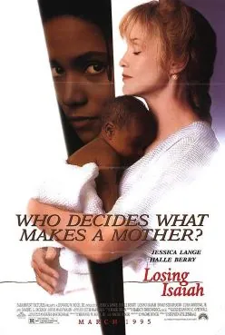

The genetics
There is no genetic science in the film; it is about biological versus adoptive motherhood. The custody battle sets the claims of blood and racial heritage, argued by Khaila's lawyer, against the bond Isaiah has formed with the family that raised him. The film weighs both and does not choose. The court rules for the birth mother, but Isaiah, who does not see Khaila as his mother, becomes withdrawn and violent, a clear sign of the weight of his upbringing, and the story ends with the two women sharing him, both declaring their love for him. Isaiah's addiction at birth is the result of exposure to cocaine in the womb, not of anything inherited in his genes; the film is careful to present it as a medical consequence of his mother's drug use.
The story
Khaila Richards, an African American woman addicted to crack cocaine, leaves her baby son Isaiah in a box in an alley while she gets high. He is found and taken to hospital, where Margaret Lewin, a white social worker, grows attached to him and adopts him into her family. Khaila, believing her son dead, is sent to rehab and gets clean. Three years later she learns that Isaiah is alive and, with the lawyer Kadar Lewis, sues to get him back. The custody trial turns on race and class: Lewis argues that Isaiah belongs with his birth mother and that the Lewins cannot raise a Black boy with a sense of his heritage, while the Lewins point to Khaila's past. The judge returns Isaiah to Khaila, but he cannot settle with her, and the two mothers agree to raise him together.